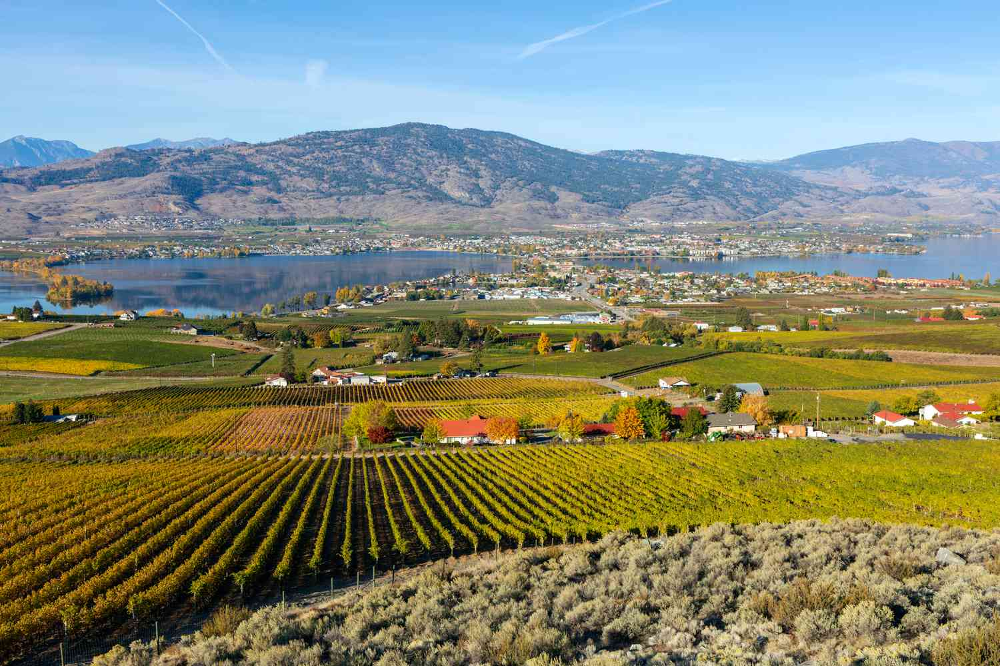
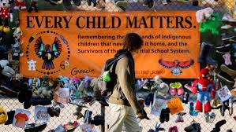
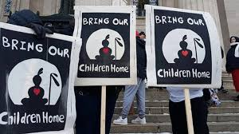

My name is Gurshan Dhillon, I am a grade 12 student soon to graduate from Osoyoos Secondary School. My parents immigrated to Canada in the 90’s however, I was born and raised here in the Okanagan. I am quite interested in computers and I.T. which is why I decided to code my own website. My other hobbies include playing basketball as I joined the senior team this year. Our senior team this year made it to the provincial level which I am thankful to be part of as it was an amazing, unforgettable experience. I also enjoy working out as it helps keep me healthy and can relieve stress at times. Lastly, I help in my family’s orchard as it will one day become mine, so I have to learn how to maintain and take care of it.
I chose to discuss the first Call to Action for my topic because of what it represents and who it affects the most, young people who deserve better. Culture and community is something which means the world to me since growing up in a primarily Sikh household, my parents taught me everything from language to lessons on how I should treat others. I could not imagine a world where all of that is taken from me and the fact that this is the reality for thousands of young Indigenous teens makes me sick to stomach.
 I am planning on coding my own website for this project however, I am still unsure on what I should choose for the topic for this project. There are not any Calls to Action which connect with farming or technology so I might do one regarding education and post secondary.
I am Halfway through this project and it has been quite helpful not only with educating me but also with taking away some rust on my coding ability as the last time I coded was on my Capstone which was late last year. One of my first priorities was to get info on the topic itself so I could use it later on not only for this website but also for my research essay. This will be my first live website which is also pretty neat as then it may be able to spread awareness. I changed my topic from education to children in foster care as the stories touched my heart and inspired me to make the website regarding the first Call to Action.
I quite enjoyed making this project because of the fact that I was able to code it all by myself and because of how much I was able to learn from it. One of the main struggles I had was with the layout of the website as coding can be a little finicky at times as it may require a lot of trial and error if something doesn't work right away. However, I was able to learn quite a lot throughout this whole process about the ongoing struggle Indigenous people are still having to endure through in the present. I am hoping having this website online can contribute and show awareness as then it may be able to help the overall goal of reconciliation.